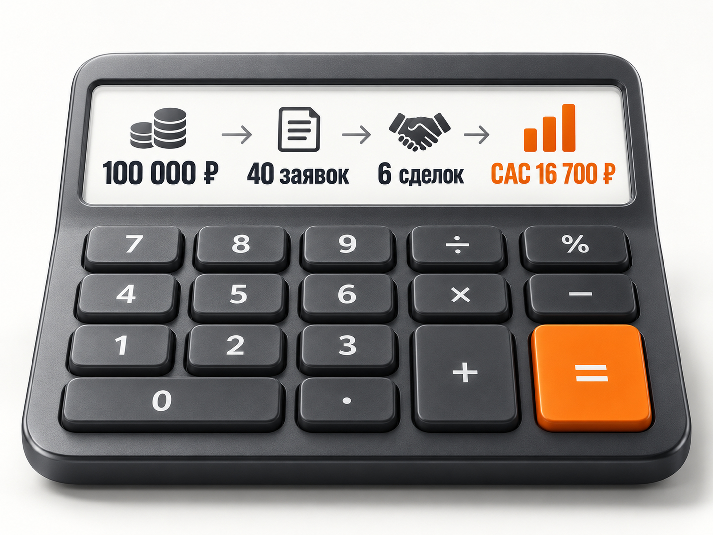
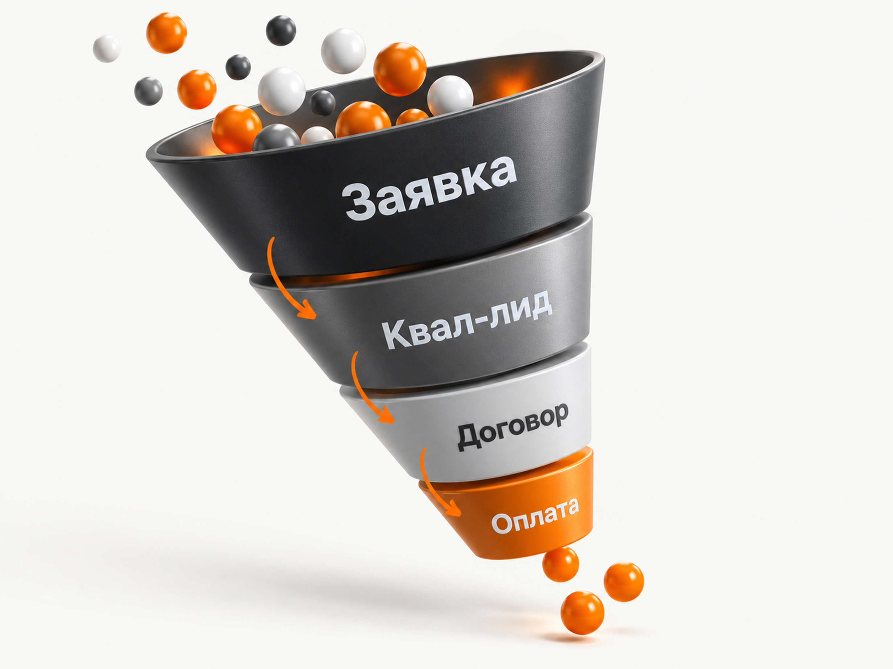

Блог о платном трафике
Продвижение услуг импорта из Китая в 2026 году: инструкция и прогноз
Услуги импорта из Китая хорошо подходят для интернет-маркетинга: спрос уже сформирован, клиент сам ищет поставщика, логистическую компанию, помощь с выкупом, таможней или поставкой под ключ.
При этом ниша сложнее обычной лидогенерации. Один человек хочет привезти коробку товара для себя, другой закупает партию на Wildberries, третий ищет оборудование для производства стоимостью в несколько миллионов рублей. Формально все они могут вводить похожие запросы.
Поэтому здесь я бы оценивал рекламу не по количеству заявок, а по цепочке:
реклама -> заявка -> квалифицированный лид -> расчёт -> договор -> оплаченная поставка
По свежим опубликованным кейсам рабочий ориентир для первоначального прогноза в Яндекс Директе я бы закладывал примерно 1 800-3 000 ₽ за первичное обращение. Это не средняя стоимость лида по рынку, а диапазон, на который есть опора в нескольких проектах. В отдельных хорошо оптимизированных кампаниях встречаются результаты заметно ниже.
Рынок импорта из Китая остаётся большим
Даже после снижения российско-китайской торговли в 2025 году направление никуда не исчезло. Более того, в январе-июле 2026 года товарооборот России и Китая вырос на 26,3% год к году и достиг $159,24 млрд. Поставки китайских товаров в Россию выросли на 29,5% и составили $72,84 млрд.
Для маркетинга важнее другое: импорт из Китая давно перестал быть одной услугой.
Компания может продавать:
- импорт под ключ;
- поиск и проверку поставщика;
- выкуп товара;
- оплату китайскому поставщику;
- проверку партии;
- карго или официальную доставку;
- железнодорожные, автомобильные, морские и авиаперевозки;
- таможенное оформление;
- сертификацию и маркировку;
- доставку оборудования;
- поставки для продавцов Wildberries и Ozon.
В актуальной поисковой выдаче именно так и построены предложения компаний: одна большая услуга постепенно дробится на несколько самостоятельных направлений.
Для рекламы это плюс. Вместо одной перегретой фразы «доставка из Китая» появляется множество более точных сегментов спроса.
Кто является целевой аудиторией
Я бы разделял аудиторию минимум на три основных сегмента.
Первый - селлеры маркетплейсов и небольшой интернет-бизнес. Им нужны поиск товара, выкуп, небольшие и средние партии, доставка, документы, маркировка.
Второй - оптовые компании и дистрибьюторы. Для них важнее стоимость партии, стабильность поставок, прозрачная логистика и возможность регулярно возить один и тот же товар.
Третий - производственные и B2B-компании. Они могут закупать оборудование, комплектующие, сырьё или продукцию под собственным брендом. Здесь сделок меньше, но потенциальная ценность одного клиента значительно выше.
Это одна из причин, почему я бы не объединял всю семантику и весь трафик в одну рекламную кампанию.
Запрос «привезти станок из Китая» и запрос «выкупить товар с 1688» относятся к одному рынку, но это совершенно разные клиенты.
Что продавать в рекламе
Формулировка «Доставка грузов из Китая» сама по себе почти ничего не говорит клиенту.
На первом экране желательно сразу показать, для кого работает компания и какую часть задачи она берёт на себя.
Например:
Импорт товаров из Китая под ключ для бизнеса: поиск поставщика, выкуп, проверка, доставка, таможня и документы.
Или более узко:
Доставка оборудования из Китая для юридических лиц с таможенным оформлением и документами.
В свежих материалах и кейсах по этой нише постоянно повторяются одни и те же факторы выбора: сроки, прозрачность стоимости, страхование, наличие склада или представителей в Китае, документы и надёжность перевозчика.
Поэтому сильный оффер здесь обычно строится не вокруг абстрактной «надёжности», а вокруг доказуемых условий:
срок доставки, минимальный объём партии, официальный договор, собственный склад, проверка товара до оплаты, страховка, расчёт стоимости до отправки, таможенное сопровождение.
Яндекс Директ я бы запускал первым
Для услуг импорта из Китая Яндекс Директ остаётся одним из самых очевидных каналов.
Причина простая: человек уже сформулировал задачу и ищет исполнителя.
Для начала я бы разделил Поиск минимум по намерению пользователя:
Импорт под ключ
«импорт из Китая под ключ», «поставки из Китая под ключ», «импорт товаров из Китая для бизнеса».
Закупка и выкуп
«выкуп товара из Китая», «закупка товара в Китае», «посредник для закупки в Китае».
Поиск поставщика
«найти поставщика в Китае», «проверка фабрики Китай», «поиск производителя в Китае».
Логистика
«доставка груза из Китая», «контейнер из Китая», «жд доставка из Китая», «авиадоставка из Китая».
Таможня и официальный импорт
«белая доставка из Китая», «таможенное оформление Китай», «официальный импорт из Китая».
Конкретный товар
«доставка оборудования из Китая», «привезти станок из Китая», «доставка автозапчастей из Китая» и другие товарные направления, с которыми компания действительно работает.
Свежий кейс Mandzhi Group показывает похожую структуру: отдельно рекламировались доставка грузов, карго, закупка и выкуп, бизнес-туры и помощь с оплатой. Под разные направления использовали отдельные объявления и посадочные страницы. За шесть месяцев получили 207 целевых обращений со средней стоимостью 1 872 ₽.
Это хороший пример того, почему структура рекламы здесь важнее количества собранных ключевых слов.
Общие запросы нужно контролировать особенно внимательно
Фразы вроде «Китай доставка», «товары из Китая» и даже «доставка из Китая» могут приводить совершенно разную аудиторию.
Среди запросов появятся:
частные посылки, AliExpress, отслеживание заказа, самостоятельные закупки, работа и вакансии, обучение бизнесу с Китаем, розничная покупка товара, бесплатные инструкции.
В кейсе по доставке из Китая после запуска пришлось активно чистить поисковые запросы и добавить более 80 минус-слов. После оптимизации стоимость заявки снизилась с 1 450 до 904 ₽.
Поэтому первые недели я бы особенно внимательно смотрел именно реальные поисковые запросы, а не только исходную семантику.
РСЯ можно тестировать, но отдельно от Поиска
По РСЯ свежие кейсы дают противоречивую картину.
В одном проекте по доставке из Китая РСЯ обеспечивала значительную часть обращений и помогла снизить CPL. В другом свежем кейсе отдельная РСЯ по аудиториям карго и ретаргетингу не дала конверсий и была отключена.
Для меня вывод отсюда простой: РСЯ здесь не обязательный источник дешёвых лидов, а отдельная гипотеза.
Я бы сначала собрал данные на горячем спросе, а затем тестировал сети: аудитории по тематике ВЭД и бизнеса с Китаем, интересы предпринимателей, посетителей сайта, похожие аудитории по качественным клиентам и ретаргетинг.
Результаты Поиска и РСЯ при этом нужно оценивать отдельно.
Посадочная страница сильно влияет на стоимость заявки
Для импорта из Китая доверие к компании влияет на конверсию особенно сильно.
Человек собирается перевести деньги за товар и доверить посреднику груз стоимостью в сотни тысяч или миллионы рублей. Один красивый лендинг этого доверия не создаёт.
На странице я бы обязательно показывал:
- Что именно компания делает и для кого.
- С какими партиями работает.
- Как проходит поставка от заявки до склада клиента.
- Какие документы получает заказчик.
- Реальные склады, сотрудников, грузы и офис в Китае, если они есть.
- Примеры поставок с цифрами.
- Расчёт или калькулятор стоимости.
- Сроки по разным способам доставки.
- Форму, которая одновременно собирает заявку и квалифицирует клиента.
Есть свежий кейс августа 2026 года, где после переработки сайта компании по выкупу и доставке товаров из Китая стоимость заявки снизилась примерно с 1 000-1 500 до 600 ₽. Авторы отдельно связывают проблему старого сайта с недостатком доверия и качеством заявок.
Это не означает, что новый дизайн автоматически вдвое снизит CPL. Но хорошо показывает, насколько большая часть результата находится за пределами настроек Директа.
Какие результаты есть в опубликованных кейсах
Есть уже несколько достаточно свежих ориентиров.
| Проект | Результат |
|---|---|
| Логистика из Китая, кейс опубликован в 2026 году | 207 лидов за 6 месяцев, CPL 1 872 ₽ |
| Доставка товаров из Китая, кейс октября 2025 | 65 заявок, CPL 904 ₽ |
| Тот же проект | 48 консультаций, 19 сделок |
| Обновление сайта компании по выкупу и доставке, август 2026 | CPL снизился примерно до 600 ₽ |
| VK для услуг импорта и логистики, опубликованный кейс 2026 | около 40 диалогов за 2 месяца по 1 800 ₽ |
Есть интересная деталь в кейсе с 65 заявками. Источник приводит 65 обращений, 48 консультаций и 19 сделок. Арифметически 19 сделок - это около 29% от всех заявок и около 40% от консультаций. Поэтому я бы использовал именно исходные числа, а не переносил формулировку источника о проценте без проверки.
Результат в 904 ₽ за заявку и такая закрываемость выглядят очень сильными. Использовать их как базовый прогноз для нового проекта я бы не стал.

Какой CPL закладывать в прогноз
Опубликованные результаты показывают большой разброс.
Есть проекты с CPL около 600-900 ₽, есть результат 1 872 ₽, а сами специалисты, работающие с нишей в 2026 году, называют рабочие значения порядка 1 800-3 000 ₽.
Поэтому для нового проекта без собственной накопленной статистики я бы закладывал:
1 800-3 000 ₽ за первичное обращение из Яндекс Директа.
Это именно стартовый расчётный диапазон, а не норматив рынка.
Если компания работает только с крупными официальными поставками, промышленным оборудованием или сложным ВЭД, обращений может быть меньше и они могут стоить заметно дороже.
Если принимаются небольшие партии, карго и массовые селлеры маркетплейсов, лидов обычно можно получать больше.
Прогноз при бюджете 100 000 ₽ в месяц
Для примера возьму рекламный бюджет 100 000 ₽.
| Сценарий | CPL | Заявки | Конверсия лида в сделку | Сделки | CAC |
|---|---|---|---|---|---|
| Сильный | 1 800 ₽ | ~56 | 20% | ~11 | ~9 000 ₽ |
| Рабочий | 2 500 ₽ | 40 | 15% | ~6 | ~16 700 ₽ |
| Осторожный | 3 500 ₽ | ~29 | 10% | ~3 | ~35 000 ₽ |
Здесь только CPL опирается на опубликованные результаты и близкий к ним диапазон. Конверсия в сделку в таблице - мой сценарный прогноз.
Специально беру для рабочего сценария 15%, хотя в одном опубликованном проекте получилось около 29% продаж от всех лидов. Для нового рекламодателя закладываться на такой результат заранее было бы слишком оптимистично.
Рабочий сценарий получается следующим:
100 000 ₽ -> около 40 обращений -> около 6 новых клиентов.
Ориентировочный CAC - около 16 700 ₽.
Чтобы понять, хороший это результат или плохой, нужно знать прибыль с одной поставки.

Допустимый CPL нужно считать от экономики сделки
Допустим, компания готова тратить до 30 000 ₽ на привлечение одного нового клиента.
Если из заявки в договор закрывается 15% обращений:
30 000 × 15% = 4 500 ₽
Значит, теоретический допустимый CPL составляет 4 500 ₽.
Если реклама приводит обращения по 2 500 ₽, экономика укладывается в установленный предел.
Поэтому бороться за максимально дешёвую заявку здесь не обязательно.
Лид за 1 000 ₽ от человека, который хочет привезти одну коробку, хуже лида за 4 000 ₽ от компании, закупающей контейнер оборудования.
Квалификация лидов критична
На форме я бы собирал не только телефон.
Для этой ниши полезны:
тип товара, примерный вес или объём, стоимость партии, город доставки, есть ли уже поставщик, нужна только перевозка или импорт под ключ.
Это позволяет ещё до звонка отделить нормального потенциального клиента от человека, которому нужна доставка одной вещи.
После обработки менеджером лид желательно переводить в CRM в отдельный статус «Квалифицирован».
Данные о квалифицированных обращениях и сделках затем можно возвращать в Яндекс Метрику и Директ как офлайн-конверсии. Яндекс прямо поддерживает передачу таких событий из CRM и использование их для оптимизации рекламных кампаний.
Подробнее эта схема разобрана в моей статье про офлайн-конверсии в Яндекс Директе.
Для B2B это особенно полезно: алгоритм постепенно получает информацию не только о том, кто заполняет форму, но и о том, какие пользователи действительно подходят компании.

Не стоит сразу оптимизировать рекламу на продажу
Продажа выглядит идеальной целью, но проблема в количестве данных.
Если компания получает пять договоров в месяц, для алгоритма это слишком редкое событие.
Яндекс рекомендует обеспечивать конверсионной стратегии минимум 10-20 конверсий в неделю. При меньшем количестве событий обучение становится менее стабильным.
Поэтому оптимальная глубина зависит от объёма.
Если сделок мало, я бы передавал всю воронку:
заявка -> квалифицированный лид -> расчёт -> договор
А для оптимизации выбирал максимально глубокую цель, которая всё ещё набирает достаточно статистики.
SEO для импорта из Китая тоже имеет смысл
В этой нише огромное количество информационного спроса.
Люди ищут:
как найти поставщика в Китае, как проверить фабрику, как оплатить товар, какие документы нужны, как проходит таможня, чем карго отличается от белого импорта, как привезти оборудование, сколько стоит доставка контейнера.
Это хорошая база для SEO.
Коммерческие страницы я бы строил под отдельные услуги, а блог использовать для информационного спроса.
Например:
«Импорт оборудования из Китая»,
«Поиск поставщика в Китае»,
«Белая доставка из Китая»,
«Доставка из Китая для Wildberries»,
«Как проверить китайского поставщика»,
«Сколько стоит доставка из Китая».
Такой подход уже используется крупными игроками в выдаче 2026 года.
Для самой рекламной части полезно также учитывать общие особенности B2B. Я подробно разбирал их в статье «Яндекс Директ для B2B».
VK и Telegram я бы подключал после Поиска
Свежие опубликованные материалы показывают, что VK в этой нише может приносить обращения примерно по 1 200-1 800 ₽, но трафик уже холоднее поискового. Человек не обязательно собирался прямо сейчас искать импортёра.
Поэтому там особенно важны сегментация и оффер.
Отдельно можно работать с селлерами маркетплейсов, предпринимателями, импортёрами оборудования и оптовиками.
Telegram больше подходит для длинной воронки.
Вместо попытки сразу продать поставку можно собирать тематическую аудиторию вокруг практического контента: изменения таможни, платежи в Китай, логистика, разбор реальных поставок, проверки фабрик.
В опубликованном кейсе импорт-агентства Telegram дал около 3 000 обращений, из которых примерно 250 были реально заинтересованными и 22 дошли до крупных сделок. При этом источник не раскрывает рекламный бюджет, поэтому использовать этот пример для расчёта CPL или CAC нельзя.
С какого бюджета я бы начинал
Для первого теста Яндекс Директа по всей России я бы ориентировался примерно на 80 000-120 000 ₽ рекламного бюджета в месяц.
На старте не стал бы одновременно распылять его на Поиск, РСЯ, Telegram, VK и десяток отдельных кампаний.
Сначала:
Поиск -> самые коммерческие направления -> нормальная аналитика -> квалификация заявок.
Если условный CPL окажется около 2 500 ₽, бюджет 100 000 ₽ даст примерно 40 обращений. Этого уже достаточно, чтобы начать анализировать качество трафика и работу отдельных сегментов.
Дальше бюджет можно масштабировать в тех направлениях, где подтверждается экономика сделки.
Что чаще всего ломает рекламу импорта из Китая
Главная ошибка - считать все заявки одинаковыми.
Вторая - вести совершенно разный спрос на одну страницу.
Третья - запускать слишком широкую семантику без регулярного анализа поисковых запросов.
Четвёртая - показывать на сайте только обещания и не давать доказательств реальной работы компании.
Пятая - оптимизировать Директ на отправку формы и не возвращать информацию о качестве лида.
Шестая - оценивать рекламу через неделю в нише, где клиент может выбирать поставщика и согласовывать договор намного дольше.
Как бы я запускал продвижение
На практике последовательность была бы такой:
- Разделить услуги и определить наиболее маржинальные направления.
- Посчитать допустимый CAC и CPL.
- Сделать отдельные посадочные страницы под ключевые направления.
- Настроить Метрику, звонки и CRM.
- Запустить Поиск Яндекс Директа по горячей семантике.
- Первые недели постоянно анализировать поисковые запросы.
- Отмечать квалифицированные и нецелевые лиды.
- Передавать квалификацию обратно в Метрику.
- Масштабировать направления с нормальной экономикой.
- После этого тестировать РСЯ, SEO, VK и Telegram.
Для услуг импорта из Китая Яндекс Директ выглядит вполне рабочим каналом и подтверждается несколькими опубликованными кейсами.
Но ориентироваться только на красивую цифру CPL здесь опасно.
Главные показатели для бизнеса:
стоимость квалифицированного лида -> стоимость договора -> прибыль с привлечённого клиента.
При стартовом прогнозе около 1 800-3 000 ₽ за первичное обращение и нормальной квалификации трафика экономика может быть очень хорошей, особенно в сегментах с крупными и повторными поставками.